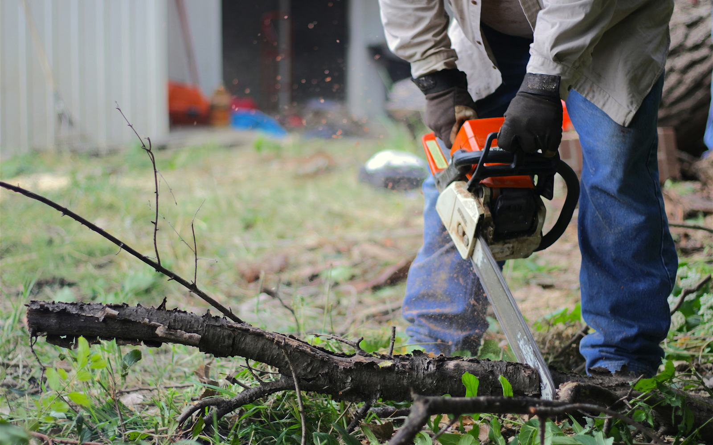

Storm cleanup in Cedar Hollow after wind, ice and heavy rain bring trees and limbs down. Trees that have fallen across yards, driveways and fences get cut up and cleared, and broken or hanging limbs left in the canopy get taken down before they drop. Trees that were damaged but are still standing get a look to see if they can stay or need to come down. All the wood and brush gets hauled off so the yard is back to normal.
What's included
Fallen trees
Trees down across a yard, driveway or fence.
Hanging limbs
Broken limbs taken down from the canopy.
Damaged trees
A look at trees that were hit but are still standing.
Debris haul off
Wood and brush cleared and removed.
Yard cleanup
Raked and cleaned up when we're done.